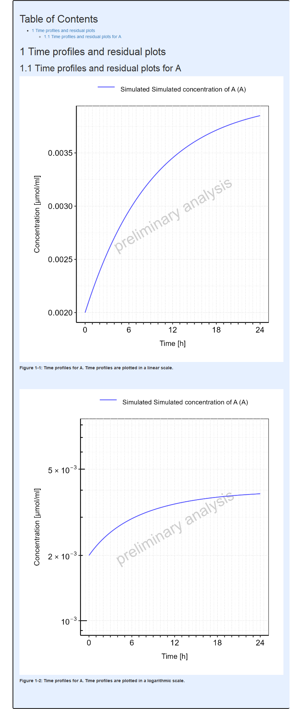

require(ospsuite.reportingengine)
#> Loading required package: ospsuite.reportingengine
#> Loading required package: ospsuite
#> Loading required package: rSharp
#>
#> Attaching package: 'ospsuite'
#> The following object is masked from 'package:base':
#>
#> %||%
#> Loading required package: tlfOverview
This vignette provides some guidance to define properties and settings for the reporting engine.
These properties can at 2 levels:
- Global or workflow plot configuration, affecting every plot of the workflow output
- Local or task plot configuration, affecting specific plots within a task
How to set global workflow properties
Reporting Engine global setting names are listed in the enum reSettingsNames.
Each global setting can be reviewed using the function
getRESettings().
It is possible to update, save and reuse most of the reporting engine default settings using the functions available in the section Default Settings.
Note that the function resetRESettingsToDefault() allows
you to reset to initial default values defined by the reporting
engine.
Notion of theme
A theme is an object of R6 class Theme which defines the
default properties used to build every plot in tlf package.
More information can be found directly within the documentation of the
the tlf package (vignettes “theme-maker”
and “plot-configuration”).
The best workflow to set a Theme object is to use json
files. Templates of json files are available in the tlf
package at the location defined below:
# Get the path of the Json template
jsonFile <- system.file("extdata", "re-theme.json",
package = "ospsuite.reportingengine"
)
# Load the theme from the json file
reTheme <- tlf::loadThemeFromJson(jsonFile)Modifications of the theme properties can be done directly by
updating the properties of the Theme object as shown
below:
# Overwrite the current background fill
reTheme$background$panel$fill <- "white"
reTheme$background$panel$fill
#> [1] "white"To save the updated Theme object, the function
saveThemeToJson provided by tlf package can be
used.
# Save your updated theme in "my-new-theme.json"
tlf::saveThemeToJson("my-new-theme.json", theme = reTheme)In addition, the tlf package provides a Shiny app to
define and save your own theme with a few clicks:
tlf::runThemeMaker().
Then, the most important step is to define the Theme
object as the current default for the workflow. In
ospsuite.reportingengine, this can be either achieved using
the function setDefaultTheme with a Theme
object as shown in the example below with
reTheme.
The properties defined by the Theme object will be used
by default if no specific plot configurations are provided for the
workflow plots.
# Set reTheme as current default Theme
setDefaultTheme(reTheme)Caution: loading a workflow re-initialize the
default theme. The function setDefaultTheme() needs to be
called after initialization of the workflow.
Additionally, Workflow objects have a theme
input argument available in method $new() to use the input
theme instead of the reporting engine default.
Exporting plots in a specific format
One important global setting is the format of the figure files
(e.g. png, jpg or pdf) as well as the quality of the figures. By
default, the figures are saved as png files with a size of 20 x 15 cm.
The format settings can be managed using the function
setDefaultPlotFormat() as illustrated
below, input arguments are format, width,
height, their units and the plot resolution
dpi.
setDefaultPlotFormat(format = "png")Watermark
Watermark corresponds to text in the background of plots. Watermark
font properties can be set in the Theme object:
reTheme$fonts$watermark.
Regarding the content of the watermark, the default content available
in the Theme object (i.e. at
reTheme$background$watermark in the example) is overwritten
by the Workflow objects:
- If a system is validated, no text is printed in background by default.
- If a system is NOT validated, the text “preliminary results” is printed in background by default.
As a consequence, setting the watermark content needs to be performed
directly with the Workflow objects: either when
initializing the workflow using the input argument
watermark
(e.g. MeanModelWorkflow$new(..., watermark = "vignette example"));
or using the workflow method
$setWatermark(watermark)
(e.g. myWorkflow$setWatermark("vignette example")).
The workflow method $getWatermark()
prints the watermark text which will be in the background of the figures
output by the workflow
(e.g. myWorkflow$getWatermark()).
Note: The NULL input argument for watermark leads to using the default watermark feature.
How to set task specific properties
Each task of Workflow objects includes a field named
settings. This optional field of class
TaskSettings can be updated and will overwrite the default
behavior of a task.
Two usual subfields of settings are:
plotConfigurations and
bins. Other settings can also be provided
and will be detailed in the next sections.
-
plotConfigurationsis a list ofPlotConfigurationobjects from thetlfpackage.PlotConfigurationis an R6 class in which plot properties are stored and used to create plots with a desired configuration. More information can be found on this notion within thetlfvignette “plot-configuration”. Providing a user-definedPlotConfigurationobject to this input list will overwrite the default configuration and will be used to generate the task corresponding task plot(s). -
binscan be a number, a vector or a function which will be used to bin histograms.
The next section will provide the names of the plots and options that
can be accessed through the field
settings.
Time profiles and residuals
Regardless of the workflow subclass (MeanModelWorkflow
or PopulationWorkflow), the names in the
plotConfigurations list available for the
“plotTimeProfilesAndResiduals” task are the
following:
- “timeProfile”: for time profile plots in linear and log scale
- “obsVsPred”: for observed vs simulated data in linear and log scale
- “resVsPred”: for residuals vs simulated data plots
- “resVsTime”: for residuals vs time plots
- “resHisto”: for histograms of residuals
- “resQQPlot”: for qq-plots of residuals
- “histogram”: for histograms of residuals across all simulations
- “qqPlot”: for qq-plots of residuals across all simulations
Since histograms are performed by the task,
bins can also be defined.
Displayed names and units are usually managed through the
SimulationSet and
Output objects. The vignette
“goodness-of-fit” provides more details about the
“plotTimeProfilesAndResiduals” task.
Example: below shows a typical mean model workflow
example in which plotConfigurations and
bins are set for a
“plotTimeProfilesAndResiduals” task.
# Get the pkml simulation file: "MiniModel2.pkml"
simulationFile <- system.file("extdata", "MiniModel2.pkml",
package = "ospsuite.reportingengine"
)
# Define the output object
outputA <- Output$new(
path = "Organism|A|Concentration in container",
displayName = "Simulated concentration of A",
displayUnit = "µmol/ml"
)
# Define the simulation set object
setA <- SimulationSet$new(
simulationSetName = "A",
simulationFile = simulationFile,
outputs = outputA
)
# Create the workflow object
workflowA <-
MeanModelWorkflow$new(
simulationSets = setA,
workflowFolder = "Example-A"
)
#> 25/07/2024 - 10:38:25
#> i Info Reporting Engine Information:
#> Date: 25/07/2024 - 10:38:25
#> User Information:
#> Computer Name: fv-az1489-772
#> User: runneradmin
#> Login: runneradmin
#> System is NOT validated
#> System versions:
#> R version: R version 4.4.1 (2024-06-14 ucrt)
#> OSP Suite Package version: 12.0.1088
#> OSP Reporting Engine version: 2.2
#> tlf version: 1.5.169
# Set the workflow tasks to be run
workflowA$activateTasks(c("simulate", "plotTimeProfilesAndResiduals"))The next chunk of code will define PlotConfiguration
objects to be included in settings:
# Define plot configuration for obsVsPred
obsVsPredConfiguration <- PlotConfiguration$new(
xlabel = "Observed values [µmol/ml]",
ylabel = "Simulated values [µmol/ml]",
watermark = "vignette"
)
# Define plot configuration for resHisto
resHistoConfiguration <- PlotConfiguration$new(
xlabel = "Residuals",
ylabel = "Count",
watermark = "vignette"
)
# Update some fields of the configuration if necessary
resHistoConfiguration$background$plot$fill <- "lemonchiffon"
resHistoConfiguration$background$panel$fill <- "lemonchiffon"
resHistoConfiguration$background$panel$color <- "goldenrod3"
resHistoConfiguration$background$xGrid$color <- "goldenrod3"
resHistoConfiguration$background$yGrid$color <- "goldenrod3"
# Define plotConfigurations list
plotConfigurations <- list(
resHisto = resHistoConfiguration,
obsVsPred = obsVsPredConfiguration
)
# Define list to update task settings with plotConfigurations field and and bins field
mySettings <- list(
plotConfigurations = plotConfigurations,
bins = 3
)Then, the settings field of the
“plotTimeProfilesAndResiduals” task can be updated as
shown below:
# Run the workflow
workflowA$plotTimeProfilesAndResiduals$settings <- mySettingsThe run of the workflow with updated settings and get the resulting report as shown below.
Since the histogram across the all simulations did not get the plot
configuration settings defined for individual simulations, the plots are
quite different. However, the option bins
is currently set among all plots of the task. Regarding observed vs
simulated plots, the got the updated xlabel, ylabel and watermark as
defined in the plot configuration.
# Run the workflow
workflowA$runWorkflow()
#> 25/07/2024 - 10:38:26
#> i Info Starting run of Mean Model Workflow
#> 25/07/2024 - 10:38:26
#> i Info Starting run of Simulation task
#> 25/07/2024 - 10:38:26
#> i Info Splitting simulations for parallel run: 1 simulations split into 1 subsets
#> 25/07/2024 - 10:38:26
#> i Info Starting run of subset simulations
#> | | | 0% | |======================================================================| 100%
#> 25/07/2024 - 10:38:26
#> i Info Simulation task completed in 0 min
#> 25/07/2024 - 10:38:26
#> i Info Starting run of Plot Time profiles and Residuals task
#> 25/07/2024 - 10:38:26
#> i Info Starting run of Plot Time profiles and Residuals task for A
#> 25/07/2024 - 10:38:29
#> i Info Plot Time profiles and Residuals task completed in 0 min
#> 25/07/2024 - 10:38:29
#> i Info Executing: pandoc --embed-resources --standalone --wrap=none --toc --from=markdown+tex_math_dollars+superscript+subscript+raw_attribute --reference-doc="C:/Users/runneradmin/AppData/Local/Temp/Rtmp2juMOM/temp_libpathb047ecd4e24/ospsuite.reportingengine/extdata/reference.docx" --resource-path="Example-A" -t docx -o "Example-A/Report-word.docx" "Example-A/Report-word.md"
#>
#> 25/07/2024 - 10:38:29
#> i Info Mean Model Workflow completed in 0.1 minReport
PK parameters plots
Selection, displayed names and units are usually managed through the
ospsuite PKParameters objects
or PkParametersInfo objects. The vignette
“pk-parameters” provides more details about the
“plotPKParameters” task.
For mean model workflows, the PK parameters are only summarized as tables. In the current version, there is no option for number of decimal numbers to set.
For population workflows, the parameters are described using plots
which depends on the population workflow type. The names in the
plotConfigurations list available for the
“plotPKParameters” task are the following:
- “boxplotPkParameters”: for boxplots of PK parameters performed by parallel comparison and ratio types of population workflows
- “boxplotPkRatios”: for boxplots of PK parameters ratios performed by ratio type of population workflows
- “vpcParameterPlot”: for VPC like plots of PK parameters vs Demography parameters performed by pediatric type of population workflows
- “comparisonVpcPlot”: for VPC like plots of PK parameters vs Demography parameters comparing to reference population performed by pediatric type
Since pediatric workflows perform VPC like plot, aggregation of the
data is performed along the demography parameters. The binning of the
demography parameters can be set by the optional field
bins from the task field
settings. This field can be either a
unique value corresponding to the number of bins or a vector defining
the bin edges for all the demography parameter paths.
Besides, the final plot can either link the aggregated values or plot
them as stairstep. The default behaviour is to perform a stairstep plot,
but this can be tuned with the optional field
stairstep
(TRUE/FALSE) from the task field
settings.
Below shows examples of how to set such options:
# Associate the bin edges
workflowA$plotPKParameters$settings$bins <- c(0, 1, 2, 3, 5, 10)
# Associate the number of bins
workflowA$plotPKParameters$settings$bins <- 15
# Set VPC as stair step
workflowA$plotPKParameters$settings$stairstep <- TRUESensitivity plots
Settings for the sensitivity plots are
SensitivityPlotSettings objects. The
vignette “sensitivity-analysis” provides more details
about the “plotSensitivity” task.
The input argument of the
SensitivityPlotSettings settings object
are then (to be created using
SensitivityPlotSettings$new()):
-
totalSensitivityThreshold: cut-off used for plots of the most sensitive parameters; default is 0.9. -
variableParameterPaths: paths that were varied in the sensitivity analysis. If suppliedtotalSensitivityThresholdis 1, else it uses the default or user-provided value. -
maximalParametersPerSensitivityPlot: maximal number of parameters to display in a sensitivity plot. By default, the maximal number of parameters to display is 50. -
plotConfiguration:PlotConfigurationobject fromtlflibrary -
xAxisFontSize: Font size of x-axis labels for sensitivity plot, that can overwrite behavior ofplotConfiguration. Default font size is 6. -
yAxisFontSize: Font size of y-axis labels for sensitivity plot, that can overwrite behavior ofplotConfiguration. Default font size is 6. -
xLabelLabel of x-axis for sensitivity plot, that can overwrite behavior ofplotConfiguration. Default xLabel is “Sensitivity”. -
yLabelLabel of y-axis for sensitivity plot, that can overwrite behavior ofplotConfiguration. Default yLabel is NULL. -
colorPaletteName of a color palette to be used byggplot2::scale_fill_brewer()for sensitivity plot. Default color palette is “Spectral”.
Since displayed sensitivity parameters can include long strings of
characters shrinking the actual plot even using small
yAxisFontSize, an algorithm providing line breaks is
included in the task to prevent the shrinking issue as much as possible.
Two fields are available in settings to tune the algorithm:
-
maxWidthPerParameteris the maximum width for the display parameters. Parameters longer than that will have line breaks. The default maximum width is 25 characters. -
maxLinesPerParameteris the maximum number of lines for the display parameters. The default maximum number of lines is 3. For parameters longer thanmaxLinesPerParameter*maxWidthPerParameter, onlymaxLinesPerParametersetting will be respected.
Absorption
The name in the plotConfigurations list
available for the “plotAbsorption” task is the
following:
- “absorptionPlot”
Mass Balance
The name in the plotConfigurations list
available for the “plotMassBalance” task is the
following:
- “timeProfile”: for time profile plots of mass balance in linear and log scales
- “cumulativeTimeProfile”: for cumulative time profile plots of mass balance in linear and log scales
- “normalizedTimeProfile”: for normalized time profile plots (as fraction of drug mass) of mass balance in linear and log scales
- “normalizedCumulativeTimeProfile”: for cumulative normalized time profile plots of mass balance in linear and log scales
- “pieChart”: for pie chart of mass balance at last simulated time point
Another field of settings is
selectedCompoundNames which allows to keep
only a selected list of compounds to be kept in the mass balance
plots.
Demography plots
The names in the plotConfigurations
list available for the “plotDemography” task are the
following:
- “histogram”: for histogram of Demography parameters performed by parallel comparison and ratio types of population workflows
- “vpcParameterPlot”: for VPC like plots of Demography parameters vs Demography parameters performed by pediatric type of population workflows
- “comparisonVpcPlot”: for VPC like plots of Demography parameters vs Demography parameters comparing to reference population performed by pediatric type
Since pediatric workflows perform VPC like plot, aggregation of the
data is performed along the demography parameters. The binning of the
demography parameters can be set by the optional field
bins from the task field
settings. This field can be either a
unique value corresponding to the number of bins or a vector defining
the bin edges for all the demography parameter paths.
Besides, the final plot can either link the aggregated values or plot
them as stairstep. The default behaviour is to perform a stairstep plot,
but this can be tuned with the optional field
stairstep
(TRUE/FALSE) from the task field
settings.
Similarly, parallel comparison and ratio types of population
workflows perform histograms, whose binning can set using the
settings field
bins.